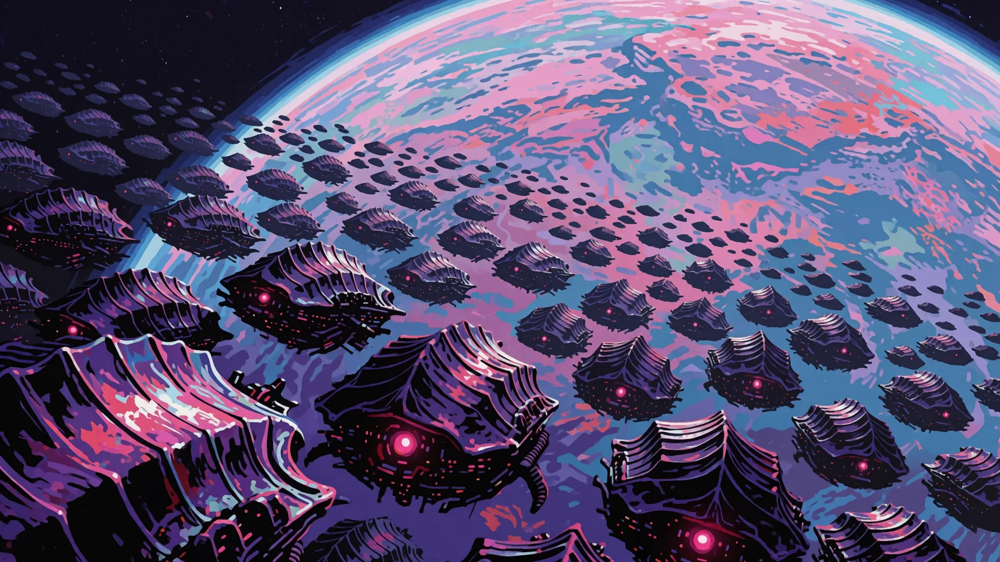
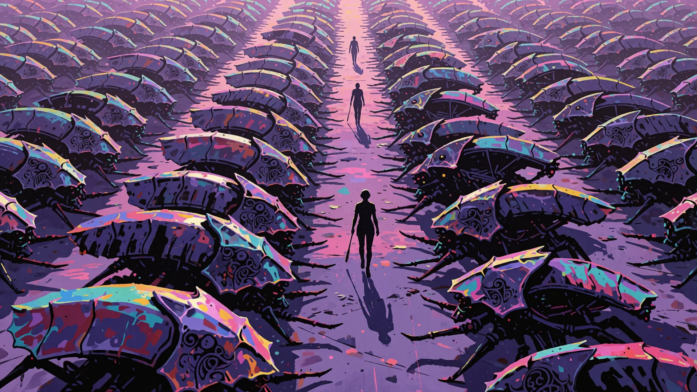
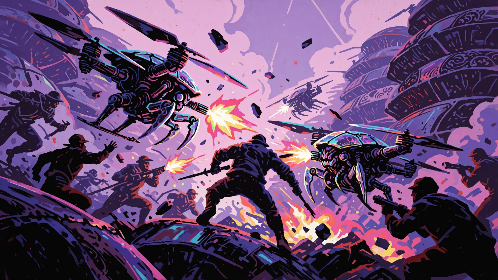
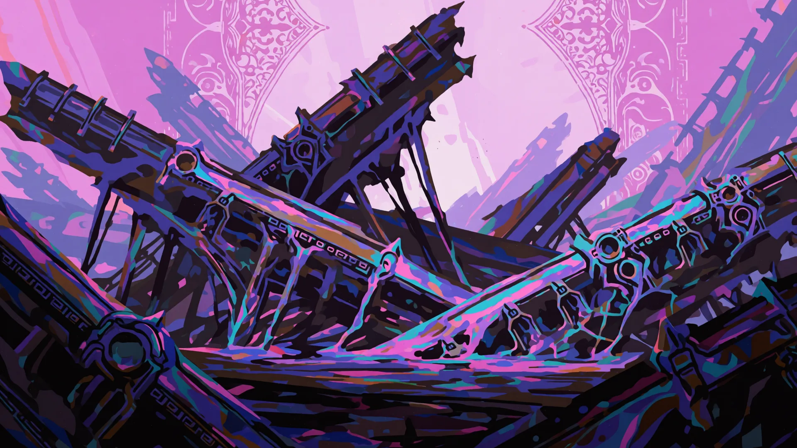
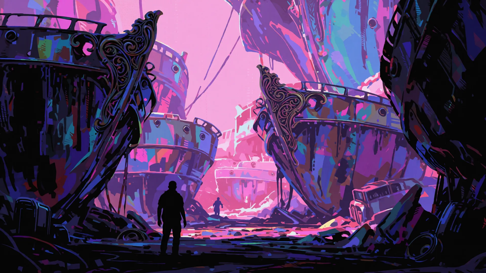
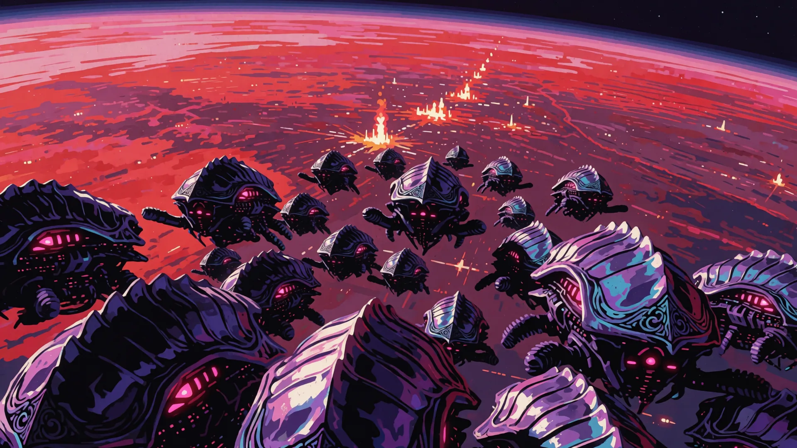

THE XENO
The campaign in play order. Three panels before each battle, two after. Type in any box to leave a note, then SAVE NOTES to download them.
Bind. Harvest. Never release.
Houses that take yield, not ground. Whatever needs them, they already own.
Not a species, a cartel. The Severed Houses lost their share of an older network and rebuilt on captive flows instead: labour, minerals, genetics, memory, devotion, fear. A world is theirs the moment its choices run through something they own. They sign treaties constantly and break them constantly, because extraction pays whoever ends up holding the monopoly.
HARVEST Reanimated units you send are 25% stronger.
THE BROOD What you kill does not die. It incubates where it fell, and when it comes due it opens a short window in which that creature is ready to send, bought with gold at the going price. A kill beside a clutch hurries it along. The swarm is a tempo you fund, not a tide you receive.
faction:xeno · js/factions.js:66
doctrine:xeno · js/factions.js:580
The arsenal
12 towers. Numbers are base values before marks, talents, commander traits or boons. Open THE LADDER on any card for its full upgrade tree.
TOXINStacking percent-HP venom · ☠ VENOM · 26g, growth ×1.7dmg 4 · rate 1.1/s · range 3.3 · magic · splash 1Venom that ignores armour AND shields and scales off the target's CURRENT health: ferocious on a full-health giant, feeble once it is nearly dead. It softens targets; it does not finish them.A House biochemistry that attacks current vitality rather than armor.Canon: Extraction is most efficient before a subject is exhausted.THE LADDER: 2 upgrades, 6 talents, 2 branches
- VIRULENT upgrade 1, 14g
- PANDEMIC upgrade 2, 25g
- DISTILLATE +50% venom damage per stack.
- AEROSOL +45% splash.
- DEEP STACKS +2 maximum venom stacks.
- NECROSIS Venom strips 2 armour per stack.
- BLIGHT +60% venom potency.
- SOLVENT Venom also slows by 20%.
- PLAGUE tier 4 branch, 44g. Venom ticks 11 plus 1.5% current health per stack, five deep; death jumps it 2.4 tiles, once.
- CORROSION tier 4 branch, 44g. Each stack strips 3 armour and slows.
SIPHONConverts damage into lives · ◐ VOID · 42g, growth ×2.2dmg 12 · rate 1/s · range 3.2 · magicThe only structure that gives lives BACK. Banks damage until the meter fills, then restores one.A noetic recovery plant that converts inflicted damage into command continuity.Canon: Violence literally funds the occupier's survival.THE LADDER: 2 upgrades, 6 talents, 2 branches
- LEECH upgrade 1, 22g
- HAEMATIC upgrade 2, 38g
- WIDE VEIN Meter fills on 30% less damage.
- SHARP FANGS +55% damage.
- RAPID CLOT −40% recovery cooldown.
- BLOOD GOLD Each life pays 5 gold.
- HAEMORRHAGE +50% damage and 20% cheaper meter.
- RECLAMATION Meter fills on 35% less damage.
- TRANSFUSION tier 4 branch, 63g. Restores one life per 340 damage banked, at most every 7s. In a long run, survival.
- PARASITE tier 4 branch, 63g. Hits for 215; banks 620 damage into one life plus 1 gold, every 10s at most.
EXECUTIONERCulls weakened enemies · ◐ VOID · 34g, growth ×1.74dmg 11 · rate 0.8/s · range 3.4 · physicalA heavy blade-thrower whose hits EXECUTE any non-elite enemy below a health threshold outright. It does not care how much health the target started with: only how little is left.A client-control weapon for culling assets below a profitability threshold.Canon: The Hungry formalizes mercy and disposal as the same calculation.THE LADDER: 2 upgrades, 6 talents, 2 branches
- HEADSMAN upgrade 1, 24g
- ARBITER upgrade 2, 44g
- KEEN EDGE +40% damage.
- SWIFT VERDICT +35% fire rate.
- DEEP CUT +4% execution threshold.
- HEAD PRICE Executions pay +50% bounty.
- LONG ARM +30% range.
- DREAD Executions slow nearby enemies 30% for 2s.
- GUILLOTINE tier 4 branch, 55g. Executes non-bosses below 24% health; 52 damage at 0.9/s. The cull embodied.
- REAPER tier 4 branch, 55g. Executes non-bosses below 16% health; each execution pays +120% bounty plus 1 gold.
SIRENConverts enemies to your side · ◐ VOID · 44g, growth ×1.98range 3.6 · noneSings a single enemy out of the assault entirely: it vanishes from your lane and marches on the RIVAL as one of yours. The strongest recruit it can hold, every cooldown.An Archonic command lure that rewrites a target's immediate allegiance.Canon: Consent is replaced by a technically valid but manufactured choice state.THE LADDER: 2 upgrades, 6 talents, 2 branches
- ALLURE upgrade 1, 30g
- COMMAND upgrade 2, 56g
- LONG SONG Charm capacity +60%.
- QUICK VERSE Charms 20% more often.
- CARRYING CRY +35% range.
- IRON WILL Converts arrive with +40% health.
- DEEP TRANCE Capacity +80%.
- SPOILS Each convert pays 3 gold.
- CHOIR tier 4 branch, 70g. Converts an enemy of up to 1400 health every 8.5s. A constant recruiting drive.
- DOMINION tier 4 branch, 70g. Charms enemies of up to 3200 health every 14s; they arrive with +60% health.
ALCHEMISTGrows stronger with every kill · ☠ VENOM · 35g, growth ×1.76dmg 7 · rate 1/s · range 3.3 · magicTransmutes death into power. Every kill inside its circle adds a PERMANENT grain of damage to its shot: the only tower with no ceiling that money cannot buy.A death-transmutation platform that permanently learns from nearby kills.Canon: Every casualty becomes proprietary research.THE LADDER: 2 upgrades, 6 talents, 2 branches
- ADEPT upgrade 1, 25g
- MAGNUS upgrade 2, 46g
- RICH GRAIN +40% per-kill gain.
- STRONG BASE +40% base damage.
- WIDE CIRCLE +30% radius.
- CATALYST +30% fire rate.
- GOLD TINCT Kills in circle pay +1 gold.
- UNSTABLE MIX Shots splash 0.8 tiles.
- MIDAS tier 4 branch, 58g. Each death in range adds 2 permanent damage and pays 1 gold.
- PHILOSOPHER tier 4 branch, 58g. Each death in range adds 4.5 permanent damage. Growth without limit.
RECKONINGEchoes recent damage taken · ◐ VOID · 38g, growth ×1.78dmg 6 · rate 0.55/s · range 3.6 · magicStrikes for a share of ALL damage the target suffered in the last three seconds. Worthless alone; monstrous at the heart of a killzone.A damage-ledger weapon that bills a target for recent harm.Canon: The Hungry turns collective violence into debt.THE LADDER: 2 upgrades, 6 talents, 2 branches
- TALLY upgrade 1, 26g
- JUDGEMENT upgrade 2, 49g
- LONG MEMORY +8% of recent damage.
- SWIFT COUNT +30% fire rate.
- FAR SIGHT +30% range.
- TITAN LEDGER +50% effect against elites and bosses.
- FULL ACCOUNT +10% of recent damage.
- PUBLIC RECORD Strikes splash 0.9 tiles.
- VERDICT tier 4 branch, 60g. Each hit adds 55% of the target's recent damage to its 24. Interest, collected.
- TRIBUNAL tier 4 branch, 60g. Adds 40% of recent damage per hit, 80% against bosses and elites. Giants pay double.
ICHORDigestive spray: eats the wounded · ◐ VOID · 29g, growth ×1.7dmg 9 · rate 1/s · range 2.1 · magicA short spray of living bile that keeps working long after the stream has moved on. It does not care what the target was; only how much of it is MISSING. On a fresh body it barely registers; on something your line has already opened up it is the fastest thing on the board. LATE-GAME, and the exact mirror of CANISTER, which eats a share of what the target ARRIVED with.A living digestive spray optimized for already wounded bodies.Canon: The deeper the wound, the more efficiently Yield is collected.THE LADDER: 2 upgrades, 6 talents, 2 branches
- GORGE upgrade 1, 19g
- DIGEST upgrade 2, 35g
- THICK BILE +65% digestion.
- RAW ACID +45% direct damage.
- WIDE MAW +35% spray width, +20% reach.
- DISSOLVE Spray strips 4 armour.
- FEEDING Anything being digested takes +30% damage.
- DEEP GULLET +50% digestion and +15% reach.
- DEVOUR tier 4 branch, 49g. Digests 2.75% of max health per second at half health, quickening as wounds deepen, for 4.2 seconds.
- SPATTER tier 4 branch, 49g. Digests 1.7% max health per second at half health; lays 5 second puddles dealing 30 per second.
GESTALTGrows on every kill near it · ☠ VENOM · 30g, growth ×1.8dmg 9 · rate 1/s · range 2.8 · physicalIt does not upgrade. It EATS. Every creature that dies inside its reach whatever killed it, is folded in permanently, and its gullet widens as it goes, so a Gestalt standing in a killzone feeds itself. Leave it too long without a body and it forgets the whole lot at once. Its real price is not gold, it is the tile: put it where the killing is, or do not put it down. INVESTMENT, and the only one in the arsenal that can be lost without being sold.A local coercive group-mind that folds nearby deaths into itself.Canon: Growth is powerful, permanent, and vulnerable to memory collapse.THE LADDER: 2 upgrades, 6 talents, 2 branches
- ACCRUAL upgrade 1, 21g
- CONFLUX upgrade 2, 38g
- GLUTTONY +60% growth from every body.
- SLOW TO FORGET 6s longer before it forgets.
- DEEP GUT +14 to what it can hold.
- SPREADING Each body adds 0.024 tiles of range, double the base.
- QUICK FEED +35% fire rate.
- BORING TEETH Ignores 35% of armour.
- HIVE tier 4 branch, 50g. Each body eaten adds 6.2 damage, up to 60 held; 9s without a kill forgets everything.
- SPRAWL tier 4 branch, 50g. Each body adds 2.4 damage and 0.030 tiles of reach, 40 held, 16s before forgetting.
MAWSwallows one creature whole · ◐ VOID · 39g, growth ×1.88range 3 · noneIt does not shoot. It opens, and the largest thing in reach is GONE not killed, REMOVED, no bounty, no corpse to send at anybody, nothing left to reanimate, and one fewer creature on the wave. What it swallowed is digested into gold over the next several seconds instead, and that is the only payment you get for it. Against a single elite you cannot out-damage, it is the whole answer; against a swarm it eats one mite and looks foolish. CONDITIONAL, and the hardest counter in the arsenal.A removal organism that consumes one strategic body outside the Echo system.Canon: The Hungry can deny even an enemy's right to leave a record.THE LADDER: 2 upgrades, 6 talents, 2 branches
- CRAW upgrade 1, 25g
- ABYSSAL upgrade 2, 46g
- QUICK HUNGER Opens 25% more often.
- RICH MEAL +60% digested gold.
- LONG REACH +30% radius.
- FAST DIGESTION Digests 40% sooner.
- SECOND STOMACH Opens 30% more often.
- TITAN'S PORTION It can swallow a boss.
- DEVOURER tier 4 branch, 63g. Swallows every 9s, a boss included, paying ×1.6 bounty over a 4s digest.
- RUMINATION tier 4 branch, 63g. Swallows every 22s, paying ×5 bounty over an 11s digest. One slow meal.
HUNGERING VEILBills healing back as damage · ◐ VOID · 28g, growth ×1.66range 3 · pureDeals damage equal to all healing a target ever received; ignores armour and shields.An Archonic field that records healing and returns it as liability.Canon: Care itself becomes taxable.THE LADDER: 2 upgrades, 6 talents, 2 branches
- ARREARS upgrade 1, 19g
- FORECLOSURE upgrade 2, 36g
- DEEPER SHROUD +35% radius.
- HARSHER TERMS +0.5 damage per point ever healed.
- WEIGHT OF DEBT Everything inside is slowed 20%.
- IN ARREARS Anything still in debt takes +18% damage.
- TOTAL RECALL +0.8 damage per point ever healed.
- COLLECTIONS Every 250 points collected pays 3 gold.
- THE LEDGER tier 4 branch, 48g. Bills 3.2 damage per point ever healed; debtors take 22% more. Nothing is forgiven.
- FAMINE tier 4 branch, 48g. A 5-tile field: everything inside slowed 38%, billed 1.5 damage per point ever healed.
SUTURESews the wave into one flesh · ☠ VENOM · 54g, growth ×1.94dmg 16 · rate 0.5/s · range 3.4 · magicLinks enemies in reach; a share of damage any one takes hits all of them. No effect on a lone target.A graft system that distributes wounds across linked subjects.Canon: Individuals become one balance sheet without becoming one consenting mind.THE LADDER: 2 upgrades, 6 talents, 2 branches
- LIGATURE upgrade 1, 29g
- CHIMERA upgrade 2, 55g
- WIDE STITCH +2 bodies held in the graft.
- DEEP THREAD +10% of every wound repeated.
- RAW SINEW +45% lash damage.
- LONG FIBRES +30% reach.
- SEPTIC THREAD Grafted bodies take +15% damage.
- TIGHT WEAVE Grafts hold 4s longer.
- ONE FLESH tier 4 branch, 78g. Grafts 14 bodies for 10s; 30% of every wound repeats across all of them.
- BLOOD KNOT tier 4 branch, 78g. Binds 3 bodies for 8s: wounds repeat at 95%, and the grafted take 20% more.
IMPALERFalls on the worst wound on the board · 🔥 FIRE · 59g, growth ×2.1dmg 62 · rate 0.22/s · range 99 · physicalStrikes the most wounded enemy on the board, harder the deeper the wound. Never hits full health.A board-wide execution spine that seeks the deepest existing wound.Canon: The Hungry attacks weakness wherever the wider system creates it.THE LADDER: 2 upgrades, 6 talents, 2 branches
- GREATSPINE upgrade 1, 33g
- WORLDSPINE upgrade 2, 60g
- BARBED HEAD +45% damage.
- SHORT PATIENCE Strikes 25% more often.
- FRESH MEAT Falls on wounds 10% shallower.
- FEVERED SPINE +1.0 wound scaling.
- SPLINTER The spine shatters 1.0 tiles wide.
- RENDING HEAT Hits burn for 24/s over 3s.
- ABATTOIR tier 4 branch, 83g. 120-damage spines at 0.55/s, up to ×4.2 at a full wound; nothing under 30% hurt.
- EXTINCTION tier 4 branch, 83g. A 340-damage spine at 0.14/s with 1.4 splash, up to ×7; nothing under 40% hurt.
What you field
8 denizens, lightest first, which is also the order the muster introduces them. The same body the rival meets when you send it.
Chitling48 hp · 0 armour · speed 1.6 · bounty 5 · 1 liveGrown, not built, and grown quickly. The Xeno spend these the way the Vigil spends Motes.Formation: Voracious Brood skirmisherThe Hungry deploys dependency as biology.DOCTRINE TALENTS: 6
- BROOD +35% bodies per summon.
- CARRION The swarm takes 70% more off its own dead.
- THICK HIDE +3 armour.
- METABOLISE Regrows 4.5% of its health a second.
- SPAWN GLUT +50% bodies per summon.
- RAVENOUS Takes 80% more off its own dead.
Gnawling64 hp · 1 armour · speed 1.3 · bounty 9 · 1 liveweak to FIRETeeth on legs. Dangerous only in the numbers it always arrives in.Formation: Voracious Brood assault casteEvery wound becomes supply.DOCTRINE TALENTS: 6
- BROOD +35% bodies per summon.
- CARRION The swarm takes 70% more off its own dead.
- THICK HIDE +3 armour.
- METABOLISE Regrows 4.5% of its health a second.
- HARD CHITIN +3 armour.
- MARROW Takes 50% more off its own dead.
Tither88 hp · 2 armour · speed 1.35 · bounty 13 · 1 liveCollects. Not a soldier and never has been, which is why it walks toward you at exactly the same pace throughout.DOCTRINE TALENTS: 6
- BROOD +35% bodies per summon.
- CARRION The swarm takes 70% more off its own dead.
- THICK HIDE +3 armour.
- METABOLISE Regrows 4.5% of its health a second.
- COLLECTION +70% salvage.
- STEADY PACE +25% slow resistance.
Bloatpod158 hp · 1 armour · speed 1 · bounty 19 · 2 livessplits into 4 on deathweak to FIREBursts into four Chitlings when destroyed. Killing it is half a favour.Formation: Mobile nutrient and spore vesselThe unit is logistics disguised as flesh.DOCTRINE TALENTS: 6
- BROOD +35% bodies per summon.
- CARRION The swarm takes 70% more off its own dead.
- THICK HIDE +3 armour.
- METABOLISE Regrows 4.5% of its health a second.
- RIPE +25% health.
- BILE Regrows 5% of its health a second.
Graft180 hp · 4 armour · speed 1.05 · bounty 26 · 2 livesresists VENOMTwo lineages fused at the seam because the ledger said the yield would improve. It did.DOCTRINE TALENTS: 6
- BROOD +35% bodies per summon.
- CARRION The swarm takes 70% more off its own dead.
- THICK HIDE +3 armour.
- METABOLISE Regrows 4.5% of its health a second.
- FUSED SEAM +3 armour.
- IMPROVED YIELD +30% bodies per summon.
Stockman300 hp · 7 armour · speed 0.9 · bounty 36 · 2 livesCounts what is left standing and adjusts the figure. The Hungry do not steal. The Hungry contract.DOCTRINE TALENTS: 6
- BROOD +35% bodies per summon.
- CARRION The swarm takes 70% more off its own dead.
- THICK HIDE +3 armour.
- METABOLISE Regrows 4.5% of its health a second.
- RECOUNT +18% health.
- ADJUSTED FIGURE A summon costs 14% less.
Hivelord345 hp · 7 armour · speed 0.9 · bounty 45 · 3 livesAURA: everything within 3 tiles moves 30% faster. The swarm feeds faster than your board can clear it.Formation: Coercive coordination nodeA political hierarchy implemented as a nervous system.DOCTRINE TALENTS: 6
- BROOD +35% bodies per summon.
- CARRION The swarm takes 70% more off its own dead.
- THICK HIDE +3 armour.
- METABOLISE Regrows 4.5% of its health a second.
- WIDER FRENZY +15% march speed.
- DOMINANCE Takes twice as much off its own dead.
Broodmother530 hp · 8 armour · speed 0.62 · bounty 60 · 3 livesweak to FIREBirths Chitlings continuously the whole way down the lane. The lane is a nursery until she stops.Formation: Strategic biomass carrierIts offspring are both soldiers and collateral under Hungry law.DOCTRINE TALENTS: 6
- BROOD +35% bodies per summon.
- CARRION The swarm takes 70% more off its own dead.
- THICK HIDE +3 armour.
- METABOLISE Regrows 4.5% of its health a second.
- PROLIFIC +25% bodies per summon.
- ENGORGED +30% health.
Who leads
5 commanders under this banner. CADRE, the unaligned baseline everyone starts with, lives on the index.
☠ SEVRAThe NecrotistWhat Sevra kills does not stop. It changes sides, and it comes back faster than it left.RISEN LEGION: Units you reanimate arrive with +75% health and move 25% faster.Signature: SIREN + SIPHON with Broodmother + HivelordArchonic continuity brokerWants: Prove that death voids neither contract nor usefulness.Breaks on: She cannot admit that an Echo may become a new person rather than property.Your dead are the best soldiers I will field today.ABILITIES AND TECH: 2 abilities, 9 tech nodes
- ⬢ RAVENOUS AIMED. Buries a maw for 9s that eats whatever walks into reach and pays 1 gold for every body it finishes. (38s cooldown, 9s)
- ◐ CONSUME Devours the weakest third of what is attacking you and pays their bounty. (42s cooldown, 6s)
- GRAVE TITHE Each reanimate you send pays 1 gold.
- BONE HARVEST +1 more gold per reanimate.
- CHARNEL ECONOMY +1 more, and reanimates are 20% tougher.
- SECOND BREATH Reanimates +25% health.
- UNQUIET +30% more health.
- LEGION ETERNAL +40% more, and 15% faster.
- SPITE +8% tower damage.
- MALICE +11% more damage.
- ANNIHILATION +15% more damage.
⬢ MAWLORDThe DevourerGrows by eating. Every corpse on the field is Mawlord getting larger.INSATIABLE: +20% gold from kills, and your towers gain 1% damage per 20 kills, without limit.Signature: ALCHEMIST + GESTALT with Chitling + GnawlingVoracious Brood fleet-lordWants: Accumulate enough independent biomass to free the Brood from its House owners.Breaks on: Its path to liberation reproduces the consumption system that created it.You brought so much material. I intend to use all of it.ABILITIES AND TECH: 2 abilities, 9 tech nodes
- ⬢ RAVENOUS AIMED. Buries a maw for 9s that eats whatever walks into reach and pays 1 gold for every body it finishes. (38s cooldown, 9s)
- ◐ CONSUME Devours the weakest third of what is attacking you and pays their bounty. (42s cooldown, 6s)
- GORGE +15% kill gold.
- GLUT +20% more kill gold.
- FEAST +25% more, and kills ramp damage twice as fast.
- SWELL +9% tower damage.
- BLOAT +12% more damage.
- COLOSSAL +16% more damage and +8% range.
- DIGEST Reanimates +20% health.
- ASSIMILATE +30% more.
- BECOME +40% more and +20% speed.
⬡ THRAXThe HivemindNever fights alone. Thrax fields a swarm and lets the swarm do the arithmetic.BROOD LOGIC: Per-copy price growth is 25% gentler and every tower fires 8% faster.Signature: TOXIN + GESTALT with Gnawling + BloatpodDirector of a coercive social-memory swarmWants: Make separation obsolete and therefore make rebellion impossible.Breaks on: Some component minds are beginning to ask for individual standing.One of me is speaking. All of me is coming.ABILITIES AND TECH: 2 abilities, 9 tech nodes
- ⬢ RAVENOUS AIMED. Buries a maw for 9s that eats whatever walks into reach and pays 1 gold for every body it finishes. (38s cooldown, 9s)
- ☁ SMOKESCREEN AIMED at a lane. Blinds everything at the point, then seeds 5 mines across it for 10s. (36s cooldown, 10s)
- SPAWNING Price growth 12% gentler.
- PROLIFERATE And another 12%.
- INFEST And another 15%, plus 8% rate.
- CHITIN +8% tower damage.
- CARAPACE +11% more damage.
- APEX FORM +15% more damage.
- PHEROMONE +10% rate.
- SYNAPSE +13% more rate.
- ONE MIND +16% more rate and +8% range.
☣ VORNThe BlightDoes not kill things so much as ensure they will not survive. Vorn wins after the fighting stops.CONTAGION: All damage-over-time effects are 50% stronger and last 30% longer.Signature: ICHOR + HUNGERING VEIL with Bloatpod + HivelordEcological debt engineerWants: Make every victory biologically expensive to reverse.Breaks on: Vorn cannot distinguish a stable ecosystem from a captive one.The rot is already in your walls. I am only here to watch.ABILITIES AND TECH: 2 abilities, 9 tech nodes
- ⬢ RAVENOUS AIMED. Buries a maw for 9s that eats whatever walks into reach and pays 1 gold for every body it finishes. (38s cooldown, 9s)
- ◎ DAMPENING FIELD Everything walking at you is slowed 35% and loses 25% of its damage for 8s. (40s cooldown, 8s)
- SEPSIS DoT effects +20% stronger.
- NECROSIS +25% stronger.
- PANDEMIC +35% stronger and +15% duration.
- WEAKEN Enemies you slow take 10% more damage.
- WITHER +12% more.
- DISSOLVE +16% more, and +10% damage.
- SPORES Reanimates +25% health.
- BLOOM +30% more.
- OVERGROWTH +40% more and 1 gold each.
◉ ULGRIMThe MawOnly interested in the big ones. Ulgrim measures a battle by what it managed to swallow whole.ELITE CAPTURE: +25% damage against bosses and minibosses, and they pay double bounty.Signature: MAW + IMPALER with Broodmother + ChitlingElite-harvest adjudicatorWants: Acquire singular minds the Hungry cannot manufacture.Breaks on: Each captured elite changes the personality doing the capturing.Send the big ones first. I am hungriest at the start.ABILITIES AND TECH: 2 abilities, 9 tech nodes
- ☠ BROADSIDE AIMED. Drops a gun emplacement for 9s. It shells everything in reach and splashes: and ground attackers chew it down. (34s cooldown, 9s)
- ◐ CONSUME Devours the weakest third of what is attacking you and pays their bounty. (42s cooldown, 6s)
- REND Physical damage ignores 14% more armour.
- SUNDER +17% more armour ignored.
- DEVASTATE +20% more, and +12% damage.
- HUNGER +10% tower damage.
- STARVATION +13% more damage.
- THE MAW +18% more damage.
- CRUSH +15% crit damage.
- SHATTER +10% crit chance.
- OBLITERATE +14% crit chance and +25% crit damage.
War boons
5 boons a world can grant this power, by world kind.
⧗ RENDERINGon forge worldsSiphoning drains half again as fast, and your dead pay a bounty.Matter in. Matter out. Nothing wasted between.boon:x_render · js/towers2.js:1221
☣ TOTAL CONSUMPTIONon apex worldsThe largest creatures take 35% more damage and pay 50% more.They ate a world here. Something had to be biggest.boon:x_consume · js/towers2.js:1230
The spine
6 beats that carry the arc. Everything else on this page hangs off them. xeno/story · js/story.js:236
BEAT 1 · The Fence We Were GivenFor an age the Hungry took consciousness where it grew, and then the Federation drew a line and called it protection. We did not go to war over it. We went looking for somewhere the line had not been drawn yet, and we found a great deal of galaxy that nobody had bothered to ring.The Hungry's whole history begins with a prohibition. Everything it built afterward was built in the space the Federation was not watching.
BEAT 2 · The Quiet ArrangementThey found us again, of course, and the argument ended in paper rather than fire. No violence. Experimentation only, under review, in agreed quantities. The Federation signed it because signing let them stop looking, and not looking is the only thing we have ever needed from them.First contact, Hungry style: the pact that supposedly restrained them is the instrument that made them invisible. Compliance on the page, harvest underneath.
BEAT 3 · Volume Is A DoctrineThe quota was a ceiling. Then the quota was a target. Now the quota is a floor, and the Houses have stopped writing the word down at all. Out here past the registries nobody counts, and a House that is not counted is a House with no ceiling.Expansion: the Hungry discovers that the pact only ever bound the paperwork, and the paperwork does not travel.
BEAT 4 · How Much Is ThereThe Blight has surveyed further than any House has fed, and the answer to how much is there is that the question is wrong. There is no edge. There is only how fast we can arrive, and the herd we bred on that little water world turns out to be very good at arriving.The reach: the Hungry's appetite meets an unbounded supply, and the only limit remaining is logistics, which is a problem it knows how to solve.
BEAT 5 · The Thing In The LedgerA House asked, in session, what the Hungry are FOR when the harvest has no end. The Maw ate the question and the room laughed. It has occurred to more than one of us since that a metabolism with no ceiling is not a civilisation. It is a condition.The mirror: the Hungry glimpses that endless conquest is not a policy it chose but a hunger it serves, and the arc's tragedy is that the wisdom arrives far too late to spend.
BEAT 6 · Older Than AppetiteWe have taken this galaxy and found the shelves already stocked by something that stopped eating long ago. It did not defeat us. It has not noticed us. The Hivemind has one voice out of a hundred billion asking whether we could have been anything other than this, and in another life the answer might have been yes.The greater dark: the Hungry win completely and discovers that winning was never the largest fact about the universe. Bittersweet by design; the conquest completes and the understanding cannot be used.
Alternate voices
These replace the first line on any world where they apply, most surprising fact first.
SEATa throne worldThe seat. Where this pasture is administered from. Bodies are yield and a throne is only a body that believes it is the head. Remove it and see.xeno/voice/seat · js/planetcuts.js:922
RENEGADEyour own banner holds itA limb of the body has stopped answering the chorus and grown its own appetite. The body does not negotiate with a limb. It reabsorbs it, or it cuts.xeno/voice/renegade · js/planetcuts.js:912
RETAKENyou lost this onceThis ground was already in the ledger. It has been struck out and re-entered by another hand. The body does not resent losing a limb. It resents having to grow the same one twice.xeno/voice/retaken · js/planetcuts.js:944
FLAWLESSthree starsTaken intact and at negligible cost. The yield is undamaged, the pens are whole, and nothing here had to be spoiled to be owned. Efficiency of this order is not luck. It is appetite that has learned patience.xeno/voice/flawless · js/planetcuts.js:933
DEFEATyou lost the campaignThe ground is surrendered. The body withdraws, digests what it learned, and returns with the lesson grown in. Hunger is patient. That is the whole of its power.xeno/voice/defeat · js/planetcuts.js:955
Opening cinematic
9 slides. xeno/intro · js/cutscenes.js:95
SLIDE 1
Consciousness... It is the only harvest that ever mattered, and for an age the Hungry took it wherever it grew.
SLIDE 2
Then the Federation drew a line around forty worlds and called it protection.
SLIDE 3
We did not go to war over it. We went looking for the parts of this galaxy nobody had bothered to ring... and there was a great deal of it.
SLIDE 4
They found us again. The argument ended in paper.
SLIDE 5
No violence. Experimentation only. Under review, in agreed quantities... signed by people who wanted an excuse to stop looking.
SLIDE 7
And not looking is the only thing we have ever needed from them.
SLIDE 8
The quota was a ceiling. Then it was a target. Then it was a floor... and out past the registries, nobody counts at all.
SLIDE 9
There is no edge to this. There is only how fast we arrive. THE HARVEST BEGINS.
WHAT THIS ACT ISThe pasture, reclaimed. The herd broke its fence and walked into the room it was raised in, and the Hungry take back its pens, its rendering yards, its gene vaults and its chorus spire one at a time. Beneath the chorus, in the dark of the pens, the Hivemind hears one voice singing alone and does not report it.
WHEN THE ACT ENDSZeta Reticuli is swept. The pens refill. The yield flows the way the yield has always flowed. In the dark of the pens, the Hivemind heard something under the chorus: one voice, alone, singing to itself. It has not reported the sound.
WHAT THE PLAYER IS LEFT HOLDINGA body does not vote on breathing, and that is not innocence. Under the chorus one voice sang alone, and it was not reported.
APPROACH
ZETA-1 b. Our own pens, in somebody else hands. The herd has come home to the room it was raised in. Let it see the room.
THE GROUND
The pods run to the horizon in every direction, sunk into a floor of living chitin, glowing, and quiet. This is where the Hungry keep what they have taken.
THE ASSAULT
Sphincter gates close over the pod rows on reflex, and growth batteries are seated in the ribs of the floor itself.
BATTLE
AFTERMATH
The rows are broken and the yield is loose. This is a loss the Houses will price in bodies, and it is larger than that.
NEW ORDER
The pens are recovered, and running again. The Hivemind has been to see them twice and has filed nothing either time.
APPROACH
ZETA-1 c. The yards. Where the yield becomes usable and the ledger becomes true. The herd is standing in it. Remove the herd.
THE GROUND
The yield comes apart here, on sloped floors the size of cities, and the run-off channels cut deep into the shell all run the same direction.
THE ASSAULT
Yard-mouth batteries and hooked gantries swing down across the channels, built to handle mass that does not want to be handled.
BATTLE
AFTERMATH
The floors run again. Output is below projection because the workforce was interrupted, and the workforce is the input, which the Houses find amusing.
NEW ORDER
The yard is at full yield. The Necrotist has begun to admire the herd workmanship in the repairs they made while they held it.
APPROACH
ZETA-1 d. The comb. Ten thousand cycles of lineage, banked and warm. The herd is crawling on our own memory. Burn it off.
THE GROUND
Every species the Hungry have ever catalogued is banked in this honeycomb, glowing faintly in its cell, shelved against some future use.
THE ASSAULT
Comb-face batteries cover the faces and membrane bulkheads seal the honeycomb tier by tier, so losing a level costs the defender nothing.
BATTLE
AFTERMATH
The comb holds. Losses are at the tier level and tiers are replaceable. Nothing irreplaceable was in the path, which was luck and is being reported as planning.
NEW ORDER
The comb is recovered and the banks are stable. One cell is logged as read and returned. No House has claimed the reading.
APPROACH
ZETA-2 b. The spire. The body speaking to itself. The herd has its hands on our throat and does not know what a throat is for.
THE GROUND
The spire rises out of the plain as a column of fused bodies and resonating membrane, and everything the Hungry own hears the Hivemind through it.
THE ASSAULT
Spire-base batteries ring the column, and membrane baffles wound around it absorb sound and shellfire with equal indifference.
BATTLE
AFTERMATH
The spire holds, cracked. The chorus stuttered for nine minutes and in those nine minutes some of us thought alone. That is in no report.
NEW ORDER
The spire is recovered and repaired. It sings as before. Under the chorus there is still one voice, alone, and it has not been reported.
APPROACH
ZETA-2 c. The blight fields. Our own weapon, in the wrong hands, upwind of our own pens. Retake them before the wind turns.
THE GROUND
Something is being grown in these furrows that should not be, and the spores drift low over the ground in the weak light of two suns.
THE ASSAULT
Furrow batteries line the field edges and spore-vent towers can turn the whole crop into a weapon on about a minute of notice.
BATTLE
AFTERMATH
The furrows are burned and the towers are down. The blight itself survives, because the blight always survives, which is why it was chosen.
NEW ORDER
The field yields again. The Blight has heard the spared world numbers and declined them. The dark is warm, it says. The dark is what we are.
APPROACH
ZETA-2 d. The ledger. Four thousand cycles of honest accounting, which is more than any power out there can claim of itself.
THE GROUND
Every wall in this chamber is a living record of what has been taken and from whom. It lights violet from the inside, through a crack in the shell.
THE ASSAULT
Vault-mouth batteries and ribbed seals guard that crack, which is the only way in and has been the only way in for four thousand cycles.
BATTLE
AFTERMATH
The vault is recovered and the ledger is intact. The Earth account is countersigned, as every supply agreement is. The Houses do not steal. The Houses contract.
NEW ORDER
The ledger is resealed, and it is far too late. A ledger works only while its entries cannot compare notes.
APPROACH
SERPO. The exchange world. Where the herd handed us twelve of its own and asked us politely for our impressions. Reclaim it.
THE GROUND
Human habs stand in alien sand under two suns, prefabricated and still bolted down. They went up for an exchange programme that ran one way and was never spoken of again.
THE ASSAULT
Perimeter batteries cover the compound, and there are membrane nests buried in the sand outside the wire that were not there when the habs were built.
BATTLE
AFTERMATH
The compound is glass. The exchange records survive, which is unfortunate, because they are in our hand as well as theirs.
NEW ORDER
The compound yields again. The Necrotist notes that the twelve were given, not taken, and that the Hungry have never once had to explain that distinction.
WHAT THIS ACT ISThe scavengers, who move what the Hungry render and take a margin on it. Wreck yards, a refinery, a hidden anchorage, a toll gate, a sanctuary full of unindexed stock. Efficient, parasitic, and now ours. The Hivemind is told the intake figure at Proxima Gate and asks, again, about the singing.
WHEN THE ACT ENDSThe herd’s disclosure files spread from world to world. Property reading its own bill of sale. The Hungry do not fear the reading. They should. A ledger works only while the entries cannot compare notes.
WHAT THE PLAYER IS LEFT HOLDINGEvery fence is also a ledger, and a ledger works only while the entries cannot compare notes. The scavengers were always the ones selling.

OLD ART · NOT THIS PLACEAPPROACH
PROXIMA d. A midden. The scavengers pile their dead in the open and live beside it. The Hungry render. They do not hoard.

OLD ART · NOT THIS PLACETHE GROUND
Ships come here to die. The hulls lie in lanes sorted by whoever built them, a hundred different yards, all of them cut open, under a red sun that makes every shadow look like a hole.

OLD ART · NOT THIS PLACETHE ASSAULT
Yard cranes and cutting gantries are turned outward, with hull plate stacked into walls between them. Nothing here was designed as a fortification and all of it is being used as one.
BATTLE

OLD ART · NOT THIS PLACEAFTERMATH
The stacks are collapsed. There is metal here and nothing else: no yield, no stock worth the name, only the shells they discarded.

OLD ART · NOT THIS PLACENEW ORDER
The yard feeds the swarm as material. A world with no meat on it is still a world with mass, which the Houses had stopped counting.

OLD ART · NOT THIS PLACEAPPROACH
PROXIMA b. A herd living in a band because the world permits nothing else. Contained by physics rather than by fence, and cheaper to us for it.
OLD ART · NOT THIS PLACE
THE GROUND
This world has not turned since it formed, so the town runs the long way along the only ground that is neither burning nor frozen. It is permanently sunset here and it always will be.
OLD ART · NOT THIS PLACE
THE ASSAULT
Ridge batteries are dug in along the sunset line, and shutter walls on both faces can close the town against the day side or the night side, whichever is trying to get in.
BATTLE
OLD ART · NOT THIS PLACE
AFTERMATH
The strip is held end to end. The stock cannot disperse: there is nowhere on this world to disperse to.
OLD ART · NOT THIS PLACE
NEW ORDER
The strip runs to quota. The finest pen the Hungry have ever operated is one it did not have to build.
OLD ART · NOT THIS PLACE
APPROACH
PROXIMA c. Volatiles. Not stock, not yield, but the Hungry do not refuse a margin because the margin is only chemical.
OLD ART · NOT THIS PLACE
THE GROUND
The plumes freeze on the way down out here and fall back as snow made of whatever the towers were trying to sell. The whole surface is blue ice.
OLD ART · NOT THIS PLACE
THE ASSAULT
Ice breach batteries ring the cracking towers, and the pipe runs are armoured under banked snow that has to be cut open before anything can be repaired.
BATTLE
OLD ART · NOT THIS PLACE
AFTERMATH
The towers are ours and the cracking continues. The scavengers built better plant than their books suggest they could afford.
OLD ART · NOT THIS PLACE
NEW ORDER
The refinery is folded into the ledger at full rate. The Houses will find that a world of ice audits more honestly than a world of people.
OLD ART · NOT THIS PLACE
APPROACH
THE FLARE SHELTER. Stock that shelters itself, on a schedule, without supervision. The Hungry have paid good money for less reliable behaviour.
OLD ART · NOT THIS PLACE
THE GROUND
The star strips this surface bare most days, so everyone here lives under metres of rock. The only thing above ground is hatches.
OLD ART · NOT THIS PLACE
THE ASSAULT
Hatch batteries sit flush with the stone, and the shutter doors are heavy enough to hold the sky out, which is what they were built for and not for this.
BATTLE
OLD ART · NOT THIS PLACE
AFTERMATH
The warren is open and the stock is counted. They dug their own pens and they maintain them at their own cost.
OLD ART · NOT THIS PLACE
NEW ORDER
The shelter runs to quota and the hatches answer to the Houses. A herd that hides on time is a herd that can be collected on time.
OLD ART · NOT THIS PLACE
APPROACH
THE NARROWS. A tax on movement, collected by parties with no standing to collect it. The Hungry objects on principle. The principle is that the tax should be ours.
OLD ART · NOT THIS PLACE
THE GROUND
One clear lane runs through the debris of a triple star, and somebody has strung a toll gate across it on cables. Ten thousand rocks tumble past on either side.
OLD ART · NOT THIS PLACE
THE ASSAULT
Lane batteries sit on the platforms and mine curtains hang on the cables between them, so the gate closes by getting in the way rather than by shooting.
BATTLE
OLD ART · NOT THIS PLACE
AFTERMATH
The ring is down and the lane is held. Transit through this system now settles against the ledger directly.
OLD ART · NOT THIS PLACE
NEW ORDER
The gate runs at Hungry rate. The charge did not go away. It went onto a schedule, which the scavengers never managed.
OLD ART · NOT THIS PLACE
APPROACH
THE DARK LOCKER. Our freight has moved through this rock for decades, on hulls that never asked what was inside. That is the arrangement working correctly.
OLD ART · NOT THIS PLACE
THE GROUND
Out here the star is just another point in the sky. They cut a vault into the rock and stack whatever cannot be written down in the cold.
OLD ART · NOT THIS PLACE
THE ASSAULT
Vault batteries are cut into the rock face and the pressure doors are thick enough to count as walls, because all of this was built to keep people out rather than to fight them.
BATTLE
OLD ART · NOT THIS PLACE
AFTERMATH
The vault is open and the stacks are counted. The scavengers carried this for us and billed us honestly, which is the only compliment the Houses have ever paid them.
OLD ART · NOT THIS PLACE
NEW ORDER
The stacks settle to the ledger. Goods that exist in no book earn nothing. Goods in our book earn at rate.
OLD ART · NOT THIS PLACE
APPROACH
PROXIMA GATE. The scavengers keep a harbour where anything may dock and nothing is asked. An unaudited population of that size is not a sanctuary, it is a backlog.
OLD ART · NOT THIS PLACE
THE GROUND
Everyone who arrived with nowhere else to be built a piece of this harbour, over sixty years, out of salvage. It is the first port out of Sol, and the ships moor under a roof of stone.
OLD ART · NOT THIS PLACE
THE ASSAULT
Harbour batteries are set into the rock roof, and a boom crosses the bay mouth strung wreck to wreck, made from the ships of people who are not here to object.
BATTLE
OLD ART · NOT THIS PLACE
AFTERMATH
The bay is taken and the boom is down. The backlog is on the floor of the harbour and it is being counted.
OLD ART · NOT THIS PLACE
NEW ORDER
The bay audits at last. Every berth is numbered and every hull is on a schedule. The Houses will want to know why nobody did this in sixty years.
WHAT THIS ACT ISA star being harvested whole by machines that produce and never consume. The Hungry have farmed worlds for ten thousand cycles and never once thought at this scale. They take the lattice, and learn that a yield which does not have to be bred, chased or persuaded is a thing it has no ledger line for.
WHEN THE ACT ENDSThe armed herd fights through our seats one by one, and the Necrotist has begun to admire the workmanship. Everything we ever farmed is now a thing that farms back. There is a lesson in that. The Houses have voted not to learn it.
WHAT THE PLAYER IS LEFT HOLDINGA yield that does not have to be bred, chased or persuaded is a thing the Harvest has no line for. Scale is not the same as appetite.
OLD ART · NOT THIS PLACE
APPROACH
SIRIUS A I. Assets in storage, maintained at cost, generating nothing. The Hungry have never seen capital held this badly for this long.
OLD ART · NOT THIS PLACE
THE GROUND
Ten thousand machines stand in rows on these terraces, pruned and aligned and facing the same way. None of them are awake and every one of them is maintained.
OLD ART · NOT THIS PLACE
THE ASSAULT
Terrace batteries sit between the rows and hard-light barriers run along the garden walls. They light when the garden is approached, and they have been lighting for a very long time.
BATTLE
OLD ART · NOT THIS PLACE
AFTERMATH
The rows stand idle. Every unit in them is inventory that has depreciated without being used since before the Houses kept books.
OLD ART · NOT THIS PLACE
NEW ORDER
The garden is inventoried and scheduled for waking. Stock that sleeps is stock that costs. The Houses will find the ledger simple and the rows will not.
OLD ART · NOT THIS PLACE
APPROACH
SIRIUS A II. Output without demand. The Hungry would call this a failure of accounting if the output were not so extremely good.
OLD ART · NOT THIS PLACE
THE GROUND
The casting halls have not stopped. They turn out identical units one after another under a star that never sets, and the canyon floor glows with it.
OLD ART · NOT THIS PLACE
THE ASSAULT
Canyon batteries line the hall roofs, and pour gates can flood the whole floor with molten metal, which is a defence and also simply how the halls are emptied.
BATTLE
OLD ART · NOT THIS PLACE
AFTERMATH
The canyon is ours and the pour continues. Units come off this line faster than the Houses can find uses for them, and they are the same pattern we packed into the Earth delivery.
OLD ART · NOT THIS PLACE
NEW ORDER
The foundry runs to a Hungry schedule. The line finally has a customer, which in sixty centuries it appears never to have had.
OLD ART · NOT THIS PLACE
APPROACH
THE ASH FIELD. Records. Records are yield of a kind: what a party knows is what a party can be charged for.
OLD ART · NOT THIS PLACE
THE GROUND
This grey plain was the outer body of a star before the companion collapsed and threw it across the system. They stood their memory cores up in it like headstones.
OLD ART · NOT THIS PLACE
THE ASSAULT
Core row batteries cover the stacks and dust berms are banked between them, so every firing line is also a trench full of the ash of something that used to be a sun.
BATTLE
OLD ART · NOT THIS PLACE
AFTERMATH
The field is held and the cores are collected. This is the largest single acquisition of information in the history of the Houses.
OLD ART · NOT THIS PLACE
NEW ORDER
The field settles to the ledger. Every core is closed and indexed and the index is the asset. The Hungry have bought a memory it cannot read yet.
OLD ART · NOT THIS PLACE
APPROACH
SIRIUS B I. Rejected stock, warehoused rather than rendered. The waste is the offensive part. Nothing that fails should cost storage.
OLD ART · NOT THIS PLACE
THE GROUND
They keep the ones that failed inspection here, in sealed white halls in orbit of a white dwarf. Every door locks from the outside and none has ever been opened from within.
OLD ART · NOT THIS PLACE
THE ASSAULT
Hall batteries cover the seals and containment shutters drop between every corridor, built to stop something getting out and now holding something back.
BATTLE
OLD ART · NOT THIS PLACE
AFTERMATH
The halls are taken and they are empty. Whatever failed inspection here is no longer here, and the Houses would very much like it back.
OLD ART · NOT THIS PLACE
NEW ORDER
The quarantine is re-inspected to Hungry standard. Failure is rendered now rather than stored. Storage was always the expensive mistake.
OLD ART · NOT THIS PLACE
APPROACH
THE DIAMOND SHELF. A yard that mends its own instead of replacing them, on ground valued for what it will become. Sentiment and speculation in a single asset.
OLD ART · NOT THIS PLACE
THE GROUND
The carbon under this shelf will turn to crystal one day, in an age nobody here will measure. They named the place for what it will be and built their repair yards on it.
OLD ART · NOT THIS PLACE
THE ASSAULT
Shelf batteries are anchored down into the carbon and the cradle clamps double as blast frames, because a thing built to hold a machine still while it is mended will hold it while it is shot at.
BATTLE
OLD ART · NOT THIS PLACE
AFTERMATH
The shelf is held. Every cradle represents a unit repaired rather than rendered, which is money the Houses would never have spent.
OLD ART · NOT THIS PLACE
NEW ORDER
The shelf runs to schedule. Repair continues, because mending turns out cheaper than casting, which the Hungry should have learned from them.
OLD ART · NOT THIS PLACE
APPROACH
THE COMPANION. A distribution network with no visible principal. The Hungry have spent real effort looking for somebody to invoice and has found nobody.
OLD ART · NOT THIS PLACE
THE GROUND
Every standing order in this system comes down that mast, and nobody at the yard knows where the orders come in. The white dwarf fills half the sky behind it.
OLD ART · NOT THIS PLACE
THE ASSAULT
Yard batteries ring the mast base and relay shutters can blind the whole line at once, which has never been done, because nothing has ever needed the line to stop.
BATTLE
OLD ART · NOT THIS PLACE
AFTERMATH
The relay is ours, the mast is down, and the orders continue. We hold the pipe and the water arrives without it.
OLD ART · NOT THIS PLACE
NEW ORDER
The mast relays to Hungry schedule again, for appearance. The Houses now know instruction does not travel by mast, and have not yet worked out what to bill for.
OLD ART · NOT THIS PLACE
APPROACH
THE DOG STAR. The principal, at last. The Hungry have traded with this system for centuries and never had a name to put on the contract.
OLD ART · NOT THIS PLACE
THE GROUND
This is the hall the orders come from. Tier upon tier of desks under the brightest star in the sky of Earth, every surface clean, and every one of them empty.
OLD ART · NOT THIS PLACE
THE ASSAULT
Hall batteries sit between the desk tiers and instruction gates seal each tier from the next, so taking this building means going down through it one floor of empty desks at a time.
BATTLE
OLD ART · NOT THIS PLACE
AFTERMATH
The hall is ours tier by tier and there is no principal in it. There never was. The Houses have been trading with an empty room.
OLD ART · NOT THIS PLACE
NEW ORDER
The hall settles to the ledger and the counterparty line stays blank. Every contract the Hungry hold here is signed by nobody.
WHAT THIS ACT ISThe herd's own system, taken back the other way. Mirrors, cloud platforms, a canyon full of warmth, water ice, an unfarmed ocean, and finally the observation post on the far side of their moon. The Hungry are watching Earth again, and the Hivemind asks what the body should do if the herd waves.
WHEN THE ACT ENDSThe Hivemind withheld one world from the yield. Unfarmed, it doubled its output and gave the surplus freely, singing. The chorus cannot metabolise the result. Choice outperformed the pens, on our own ledger, and the experiment is being repeated quietly.
WHAT THE PLAYER IS LEFT HOLDINGThe farmer is now the herd. We watch Earth again, and the Hivemind asks what the body does if the herd waves back.
EARTH: whatever came out of the rock, and a great deal of it. Survive.
APPROACH
EARTH. The delivery world. Everything inside that rock was ours, seeded and patient, and the herd broke the package open ahead of schedule. Collect what survived.
THE GROUND
The fragments came down whole over the harbour district and split open in the streets. Whatever had been riding inside Apophis was already awake when it landed.
THE ASSAULT
The same intercept batteries that broke the rock are swung round now, depressed to fire along their own avenues, and every shelter door in the district is sealed from the inside.
BATTLE
AFTERMATH
The district is taken and the hulls are recovered. The seeding was early by their calendar and precisely on time by ours.
NEW ORDER
The city produces again under supervision, and the hulls stay in the streets. A pen learns faster when it can see the crate it arrived in.
LUNA: abandoned depots on the far side, the Hungry already inside them, and then the Vigil wakes.
APPROACH
LUNA. The observation post. Ten thousand cycles of watching a herd that never once looked back at us. Now it looks. Recover the relay.
THE GROUND
No signal from Earth has ever reached the far side. The relay dish sits half sunk in the regolith, and it was still warm when the first human crew found it.
THE ASSAULT
Hardpoints are buried in the basin rim and mass drivers run along the berms. Whoever built the dish built the guns as well, and did not build them for us.
BATTLE
AFTERMATH
The dish is ours again and it is broken, which are two facts the report will have to carry together.
NEW ORDER
The dish resumes its function. The Hungry are watching Earth once more. The Hivemind has asked what we do if the herd waves.
MARS: the Hungry hold the trench, and the machines are working the same ground.
APPROACH
MARS. A crack in a dead world, and the herd filled it with warmth. They always do this. It is why they are worth farming.
THE GROUND
They dug the habitat trench along the floor of Valles Marineris, four kilometres of cliff on either side, and once a season a dust storm closes the sky over it completely.
THE ASSAULT
Gun galleries are cut straight into the canyon walls and fire down onto the floor. Whoever built this trench expected to be outnumbered in it.
BATTLE
AFTERMATH
The trench is open along its length. The storm did most of the closing work, which is efficient and which the Houses will nonetheless credit to us.
NEW ORDER
The trench produces. The canyon holds heat, the heat holds bodies, and the bodies are counted twice a cycle now instead of never.
VENUS: a Federation station that has been in our sky the whole time.
APPROACH
VENUS. A herd that builds its pens in the sky. Charming. Buoyancy is a structural weakness the Hungry have not had to exploit in some centuries.
THE GROUND
The city floats fifty kilometres up, moored to nothing, riding the one layer of this atmosphere that will not crush a hull. Nobody has ever stood on the ground below it.
THE ASSAULT
Gun blisters are set straight into the pressure hulls, and the mooring towers have been eaten half through by acid. Everything here is one bad seam away from falling for an hour.
BATTLE
AFTERMATH
The platforms that fell are still falling. The ones that did not are ours, and their populations are counted and pending.
NEW ORDER
The sky yields. The atmosphere is hostile to us as well, which is irrelevant: the body does not require comfort, only intake.
MERCURY: the machines are already here, in numbers, around the ring.
APPROACH
MERCURY. A wound coil in an iron core. Somebody was building a road here and stopped. The Hungry do not leave infrastructure unfinished.
THE GROUND
Nothing survives the day side, so everything here is built in the terminator or under it. The iron core of this world is the largest in the solar system for its size, and somebody wound it.
THE ASSAULT
Sun-side batteries that run on more power than they can spend, and shutter walls that close ahead of the terminator as it crawls around the planet.
BATTLE
AFTERMATH
The basin is recovered and the ring answers to the Houses. Passage through the belt becomes a service, and a service can be priced.
NEW ORDER
The ring runs to schedule. Everything crossing the belt now crosses on Hungry terms, which is the whole argument for owning a road.
JUPITER: a Federation anchorage, and the machines raid it while we are taking it.
APPROACH
JUPITER. The Houses have run this lane since before the herd had ships. The anchorage is ours in everything but the flag on it.
THE GROUND
There is no ground here at all. The anchorage rides the cloud decks between storm bands, tethered to nothing, and the radiation would kill an unshielded crew inside an hour.
THE ASSAULT
Storm-band batteries slung under the anchorage hulls, and mag-shields holding the radiation off that must never be dropped, which is exactly what makes them worth shooting at.
BATTLE
AFTERMATH
The anchorage is recovered. The routing is intact and should never have been left readable. Somebody will answer for the logs.
NEW ORDER
The lane runs to schedule again and the interdiction beyond it stands. What lies under those rings is a House matter and remains one.
SATURN: the Hungry seat and their commander. The scavengers hit it at the same time, for the door.
APPROACH
SATURN. The seat. The Houses have crossed by this door since before the herd was a herd, and no other power has ever been told it exists.
THE GROUND
The rings throw a shadow across the whole approach, and at the north pole a six-sided storm has been turning in the same place for as long as anyone has had a lens to point at it. It is not weather. Nothing else in the sky has corners.
THE ASSAULT
Ring-shadow batteries firing up through the gaps, and the hexagon itself, which is a standing wave with six faces and will take a ship apart if it closes while you are inside it.
BATTLE
AFTERMATH
The aperture is recovered and intact. Whoever comes through comes through on our schedule, which is the only line in this ledger that has never changed.
NEW ORDER
The door runs. The Hungry do not own the distance between stars. They own the doorway, and a doorway is the better asset.
WHAT THIS ACT ISThe guardians' cathedral, and the end of one Hungry. The chorus occupies the Cathedral of Rings and finds the acoustics superior. The Hivemind, having spared one world and watched it out-produce the pens, asks that the seat not be filled; the Blight hears the same numbers and declines them. For the first time in the Hungry's history, WE means two different things.
WHEN THE ACT ENDSThe Blight has heard the spared world’s numbers and declined them. The dark is warm, it says. The dark is what we are. Two commanders, one chorus, and for the first time in the Hungry’s history the word WE means two different things.
WHAT THE PLAYER IS LEFT HOLDINGLeaving the dark is a choice, and staying is also one. The proof came in on our own ledger and it came too late to spend.
APPROACH
MAIA. The guardians grow sound here and call the result law. A pen with better acoustics is still a pen. Enter.
THE GROUND
They cut the hymns here that certify a world as protected. The pipes stand upright in nebula light, tuned, taller than towers, and they are singing when you arrive.
THE ASSAULT
Choir-ring emplacements are braced between the pipes, and the hard-light buttresses ring aloud when they are struck. The defence and the instrument are the same object.
BATTLE
AFTERMATH
The instrument is broken. The chorus of this place resisted ours for some time, which is the first interesting thing the Federation has ever done.
NEW ORDER
The hall is fitted to the swarm. Their harmonics carry further than ours ever did. We are singing their song at their worlds, and it is working.
APPROACH
ELECTRA. Their ledger. The Hungry keep one of these too. Comparing them would be instructive, and the Houses have voted not to be instructed.
THE GROUND
Every one of the forty protected worlds is filed here, tier upon tier of light-etched shelving, under a star that is visibly going out.
THE ASSAULT
Buttress turrets cover every tier and the reading-vault doors seal from the inside. The archive was built to survive its own librarians.
BATTLE
AFTERMATH
The shelving is down and the entries are drifting past us as light. We are reading them as they go. This was not the plan.
NEW ORDER
The archive is ours and its ledger is open. A ledger works only while its entries cannot compare notes. We appear to have made an error.
APPROACH
TAYGETA. A fence at planetary scale, built by the ones who claim to despise fences. The Hungry have never pretended. Take the anchor.
THE GROUND
Cabling the width of towers climbs out of the atmosphere here, and this is where it comes down. Two suns throw every shadow twice.
THE ASSAULT
Anchor-mount batteries and hard-light shear walls hold the base. Bring the anchor down and the ring above comes down in sections, on everybody.
BATTLE
AFTERMATH
The anchor is ours and the ring above is guttering out in sections. A closed world has become an open one, which serves us precisely.
NEW ORDER
The anchor is ringed for the Hungry. We kept the fence exactly as it was. We simply changed which side the meat stands on.
APPROACH
MEROPE. A seed bank. The guardians hoard futures the way we bank bodies. The principle is identical, and they will not hear it said.
THE GROUND
They bank seeds here for worlds that have not been allowed to grow yet, terraced under hard-light panels in the brightest part of the cluster.
THE ASSAULT
Garden-wall emplacements and irrigation towers have been turned into firing points. Every shot fired here costs somebody a harvest ten thousand years out.
BATTLE
AFTERMATH
The terraces are ash and the vaults are intact and unopened. The Hungry do not spoil stock. We have merely changed its holder.
NEW ORDER
The garden grows for the swarm, and the stored futures are being planted, which is new. The Hivemind has asked to supervise it personally.
APPROACH
CELAENO. A room where the guardians argue over whether they were kind enough. Ten thousand cycles of minutes, and no verdict that freed anyone.
THE GROUND
This is where the Federation tries its own. The benches ring an open floor in tiers, under the dimmest star in the cluster.
THE ASSAULT
Gate batteries cover every entrance and hard-light barricades cross the bench tiers. A court built to be defended is a court that expected to be hated.
BATTLE
AFTERMATH
The benches are scattered. The Hungry hold no trials, which the Necrotist calls efficiency and which is beginning to sound like an excuse.
NEW ORDER
The court is ours and its record is being read into the chorus. The Houses voted not to learn anything from it. The vote was close.
APPROACH
STEROPE. The Federation keeps its unkept promises in a cellar. There is no more honest description of them available.
THE GROUND
Every door down here is stamped, dated, and has never once been opened. Two dim stars barely light the ground above the chambers.
THE ASSAULT
Vault-door batteries and hard-light seals hold the chambers shut. Wardens maintained them for a century without ever reading what they were guarding.
BATTLE
AFTERMATH
The chambers are recovered. The Earth file confirms what the Hungry had already invoiced: the protection was pulled, and we were told before it was pulled.
NEW ORDER
The cellar yields. Every deferral in it is a debt somebody else failed to pay, which the Houses will now collect on their behalf, at rate.
APPROACH
ALCYONE. The centre. Every ring the guardians ever closed was authorised from that floor. The Hungry will stand on it.
THE GROUND
The Cathedral of Rings stands in the brightest light of the cluster, gold circles around an empty central floor. The First Speaker sits here.
THE ASSAULT
Ring-tier batteries and layered hard-light choirs turn slowly around the seat. The innermost ring has never been fired. It is about to be.
BATTLE
AFTERMATH
The rings are broken and the floor is bare. The seat was already empty. Something else has been speaking with their voice.
NEW ORDER
The cathedral is held. The chorus has occupied it and finds the acoustics superior. The Hivemind has asked that the seat not be filled.